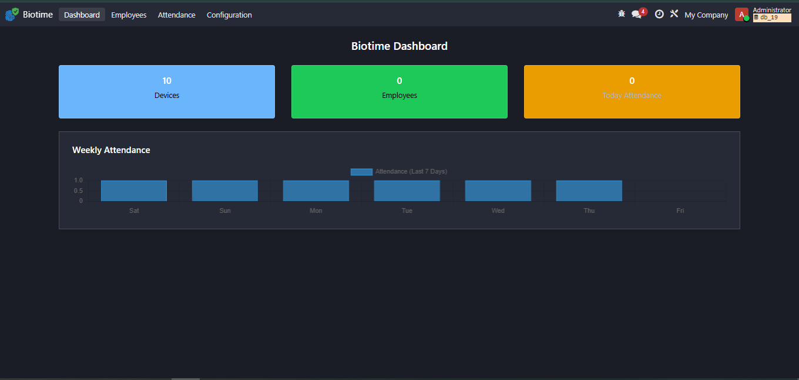
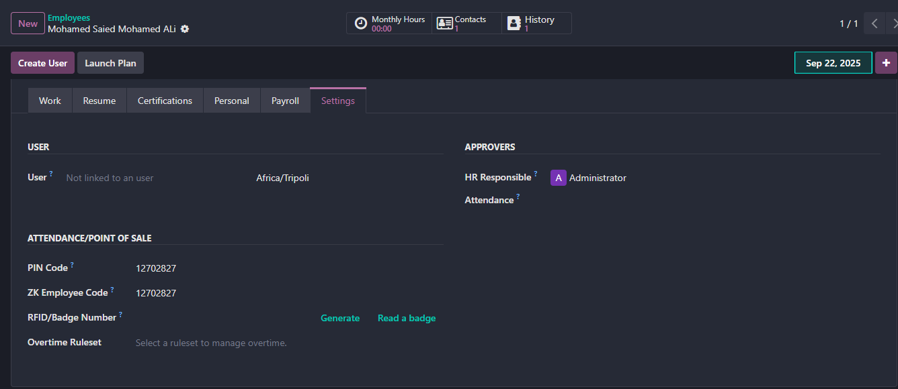
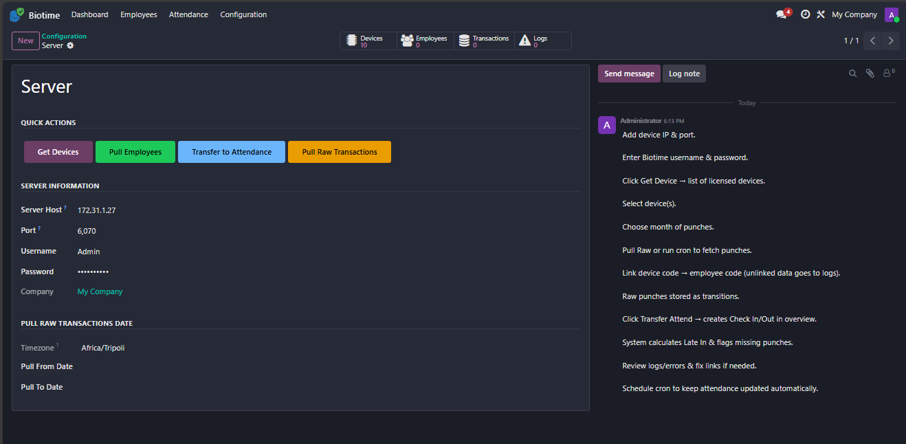
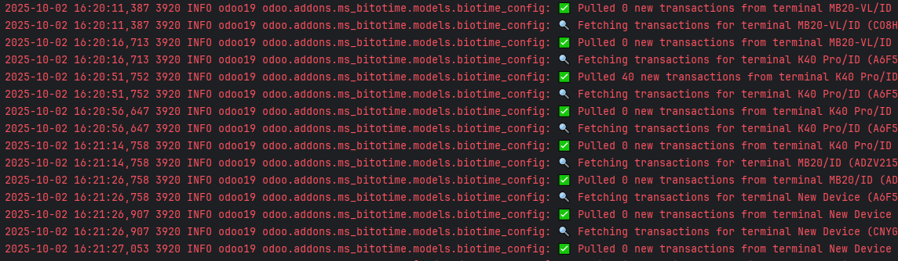
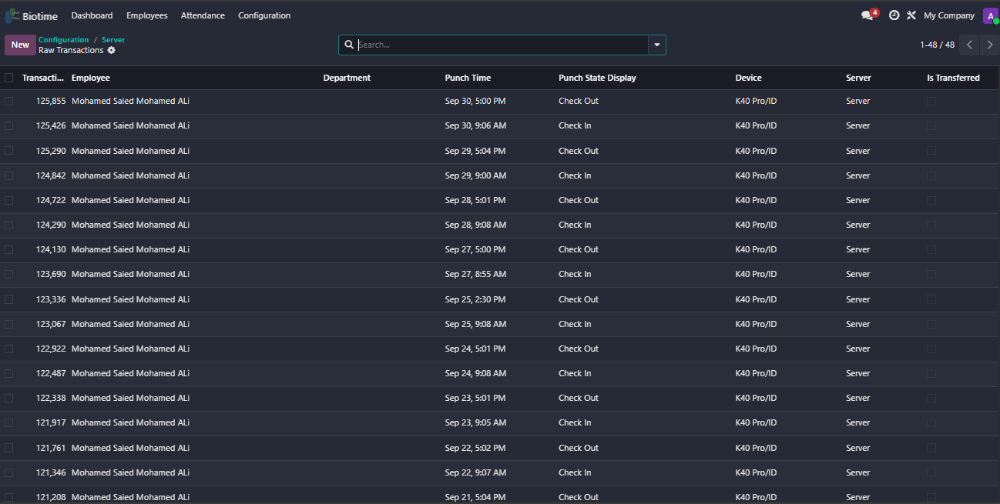
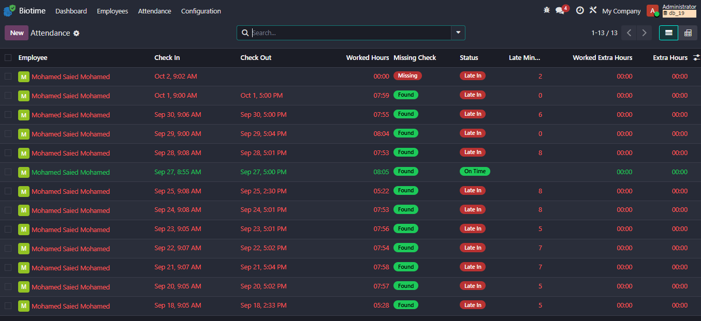
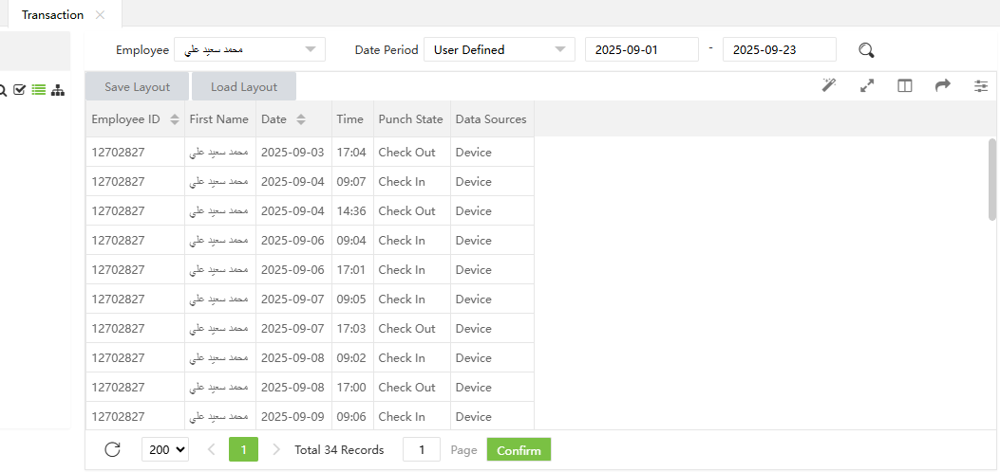

Dashboard view showing the attendance chart, today's attendances, employees and total devices.

Explain how to link the ZK device code to an employee record in Odoo.

Configuration and chatter: steps to set up the integration and document the setup process.

The system fetches device logs without impacting active users in the production environment.

Raw transactions are stored in the `biotime.transaction` model before being converted to attendance records.

Convert raw transactions into `hr.attendance` records; missing punches are detected and late minutes calculated from the employee schedule.

Inspect Biotime data entries to compare and validate raw device logs before import.